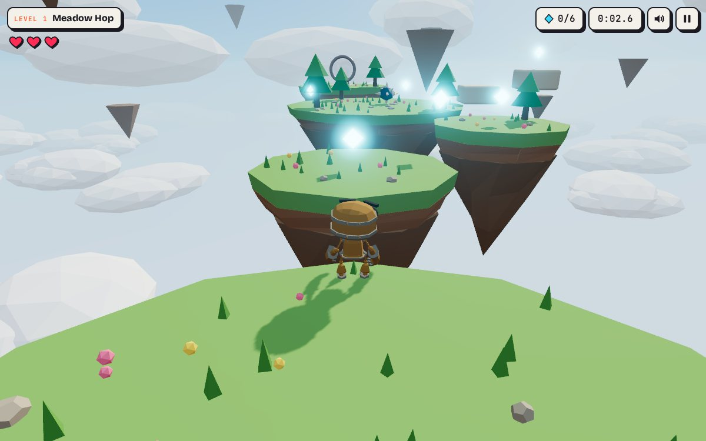

Free course14 lessons≈ 7 hours
From a spinning cube to a 3D game you can ship.
Learn to make browser games with Three.js, one small step at a time. Every lesson has a live demo you can play with, and the lessons add up to Skyhop, a finished 3D platformer that runs on desktop and phones.

Learn by poking
Every concept comes with a live demo with sliders and toggles. Change a number and see what it does.
Real, running code
The code in each lesson is copied from the demo that runs on the page, so it always matches.
Easy → advanced
You start with a cube and move on to physics, AI, shaders and performance tuning, then put it online.
The curriculum
Three tiers. Do them in order — each lesson builds on the one before.
Foundations
Scenes, light, input and a camera that follows you. Lessons 1–4
Gameplay
Gravity, collisions, pickups, a real character and enemies. Lessons 5–9
Polish & ship
Game flow, juice, shaders, performance — then publish it. Lessons 10–14
Before you start
You need less than you think.
What you need
- A modern browser — Chrome, Edge, Firefox or Safari.
- A code editor. VS Code is free and great.
- Basic JavaScript: variables, functions,
if, arrays, objects. - No maths degree. We explain every vector and sine wave as we go.
Run the lessons on your computer
Download the course from GitHub (green Code button → Download ZIP), open the 3d-game-tutorial folder, then start a tiny local web server inside it. Browsers block JavaScript modules opened straight from disk with file://, so you need a server.
# pick ONE of these, run it in the course folder
npx serve .
python3 -m http.server 8000Then open http://localhost:8000 (or the address it prints). That's the whole toolchain. No build step, no bundler.
Credits
- Three.js r187 — MIT License, © three.js authors. threejs.org
- RobotExpressive model — CC0 by Tomás Laulhé (Quaternius), modifications by Don McCurdy.
- Bricolage Grotesque and JetBrains Mono fonts — SIL Open Font License.
- Every sound effect is synthesized live with the Web Audio API. No audio files.
- Course, game code and lesson text written for this project. Feel free to learn from it and remix it.